This was a two-week project completed during the immersive UX Design course at General Assembly. The design brief asked us to act as if Scholastic were having a lull in business, and wanted us to create a mobile or web solution that incentivizes children ages 8-12 to read more frequently.
I worked with Reed Townsend Jones, and Brian Chew on this project.
Although we were all involved in the entirety of the process, I took on the UI/Visual role in this group. I created the mockups, the branding, and the sketches for the personas and storyboard.
After some preliminary research (described in depth below), we determined that the lack of children's engagement in reading was most greatly influenced by how involved the parent was with his or her reading habits. We found that the reason that parents were not as involved was due to lack of time, context, or insecurity with their own reading habits.
Our solution was to create a mobile app that engages both the child and parent in the reading habits of the child. It does this by allowing the child to track his or her reading, find new books, and collect points. On the parents' end of the interface, the app allows the parent to receive updates and prompts to engage in the child’s current book.
Our first step as a team was to understand the landscape of children, reading, and technology, so we interviewed some parents, children, and teachers on what kinds of technology are used at home and in the classroom, what motivates children, and how they currently engage with Scholastic's brand.
Additionally, we read previously published studies on child motivation, and reading habits, as well as analyzing existing reading apps.
One of the challenges of this project was that we were doing this research when children were not in school, and thereby not interacting much with Scholastic (as it a primarily something children encounter through school book fairs). This molded our solution to something based on children's reading outside of school, which is actually helpful since this seems to have the most impact on whether a child reads or not.
That being said, our next step was to interview parents and children in a nearby park. From these interactions, we gathered that:
Our next set of interviews was at the San Francisco public library, where we found a group of summer camp students reading. We questioned both the students and the camp councilor on motivation, and reading.
What we found was that:
We also interviewed the librarians on staff who told us that:
From the information we gathered from these interviews we created a web survey asking parents questions about how they motivate their children to read, how much their children read, when, and why, and how much they personally read.
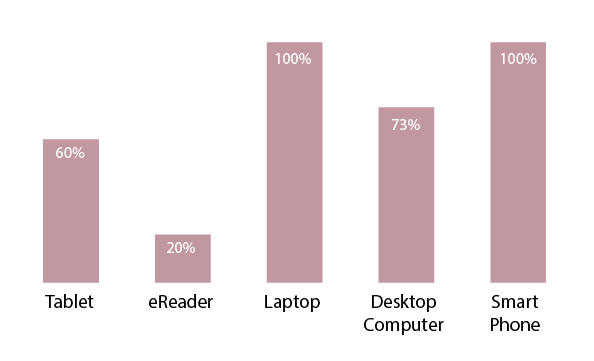From our survey we found that all of the households we interviewed had smart phones, and laptops, and most had tablets. We decided that a smartphone would be the best option to design for because it would be more portable for tracking, more accessible, and would be able to notify in real-time.
Taking from the information gathered during these interviews, we created two personas that would be our foci for designing the solution.
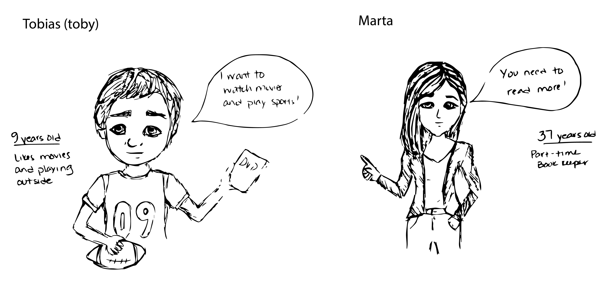These are my sketches of our storyboard related to our personas:
 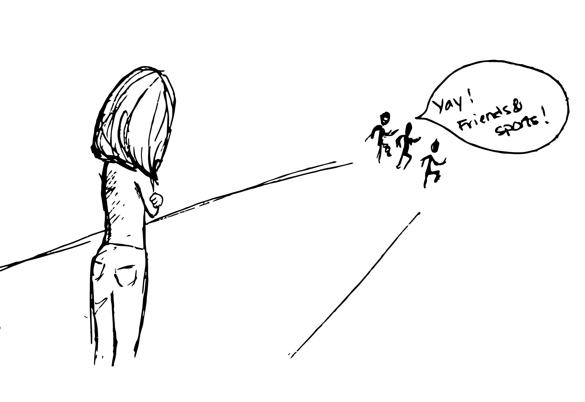
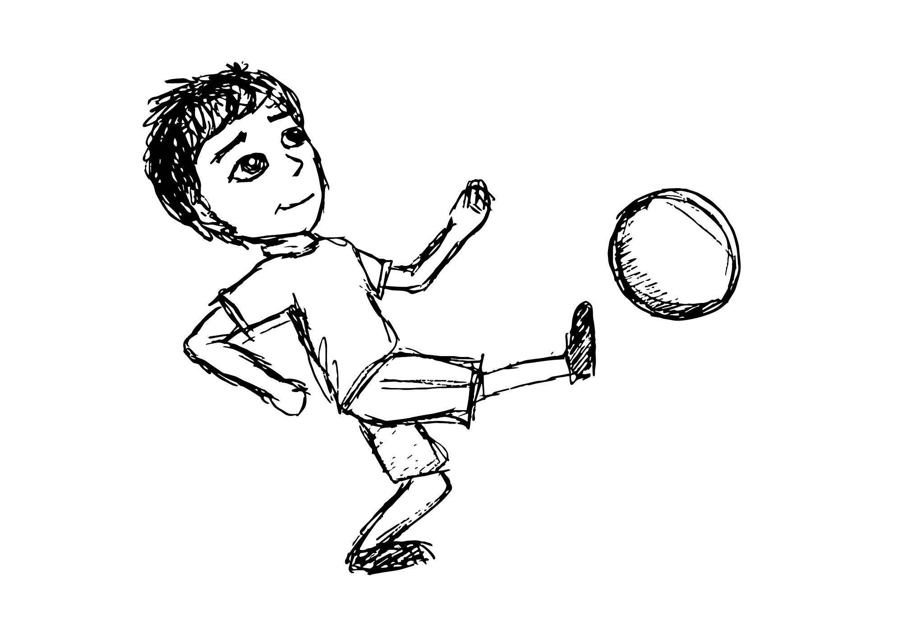
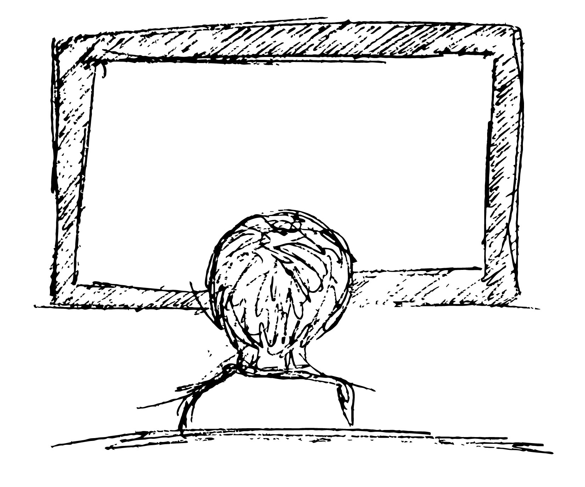
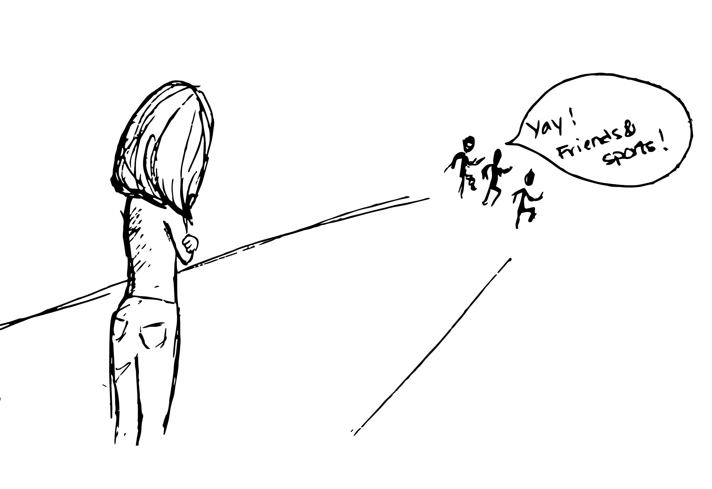
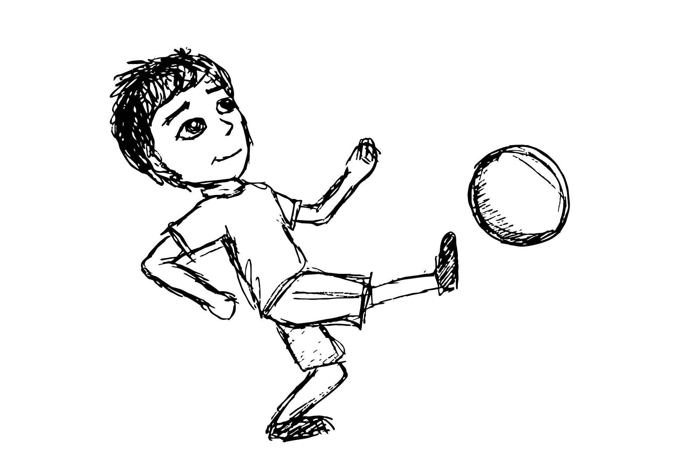
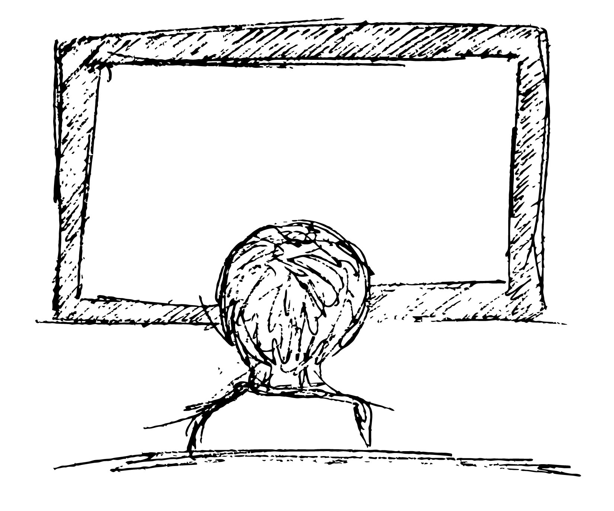
Toby likes to read when he is motivated by a good book, but Marta only sees him playing with his friends, playing sports or watching TV, so she worries that he doesn't want to read.
Our competitive analysis was split into several parts
We looked at some existing apps that Scholastic offers. They currently have an app that times reading and keeps it in a log, and one for searching for books to buy, but nothing that engages both child and parent.
We also looked at other reading programs and book clubs, especially the SFPL Summer Reading Program, and Bookadventure.com.
We searched for other reading apps that were designed for children older than 8 and we didn’t find any.
We did find DIY.org, which we thought was a good example of engaging with children, and designing for a slightly older child. It thrives on the competitive, mastery, and the badge-reward aspects of gamification.
We created two concept maps, one for the child and one for the parent. These models work in tandem, but through separate flows and interfaces on the app.
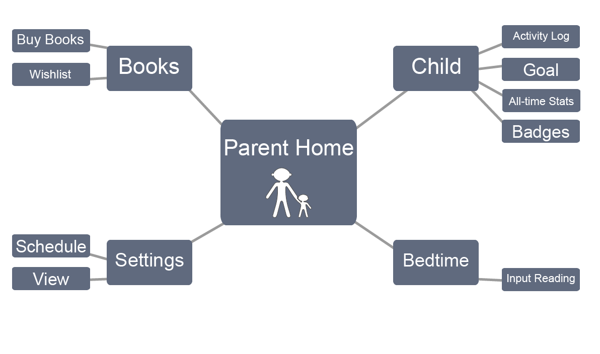 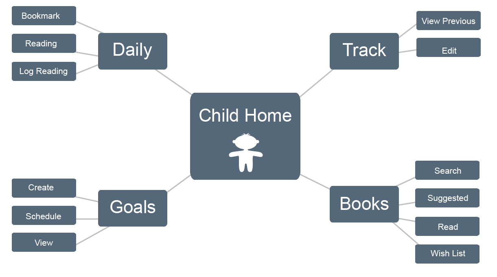From our brainstorming, we put together a list of features that we wanted in the app, and put them on the whiteboard and labeled them “must have,” “should have,” “could have,” and “won’t have" (the MoSCoW method of sorting through features).
We wanted to design all the features, but we were limited in time scope.
From there we took the “must” and “should” features and put each one on a sticky note and sorted them into categories.
When we asked other people to perform this task we saw that they sorted them into more concise groups and tended to group the “shoulds” together in a pile of "I'm not sure what to do with these", so we just took them out for the sake of efficiency and speed.
Our next step was to create a site map of how we thought the app would work. The site map is broken down into pages, and the elements that would appear in the navigation are in blue.
We gathered our thoughts on what types of elements should be on the app to represent what we were trying to achieve, and then split up and each created separate flows using Basamiq. The wireframes are here:
Parent's flow (checking up on child, and entering information for him)
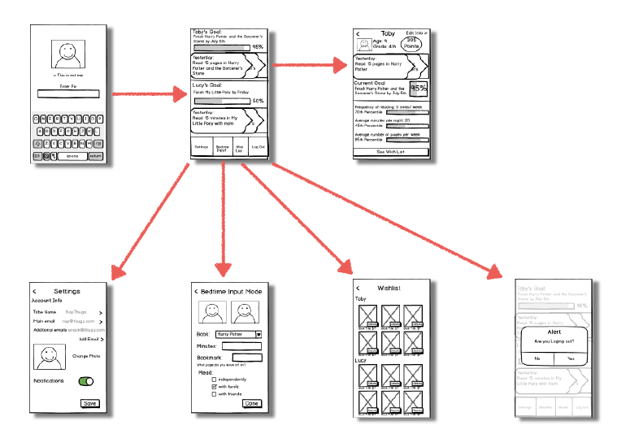We tested our first iteration prototype on a mother and daughter. We gave them the prototype to use on the phone, and we watched their progress mirrored on a computer so that we weren't hovering over them.
They gave us good feedback on what things they liked and how the mother would like the notifications framed. The mother said that she would like to hear positive achievements of her child, and only if it were a very long time since the child last logged would she want to hear about it.
She also said that her daughter "loves to collect her achievements," and was enthusiastic about the badges. She even suggested that the badge system could be extended to the parents' side of the app as motivation to keep up with their child's reading.
To further understand the notification system and wording, we did a bodystorming exercise in which one of us was the child, one the mother, and the other the phone. Speaking these things out loud to each other gave us a good understanding of how to frame the notifications positively, and in a way that would encourage interaction rather than guilt.
I created a high fidelity mockup on Illustrator trying to match Scholastic’s current apps and colors used on the website. We ran the project by our instructors, and they gave me some pointers on how to fix the design and told us that the scope of our project was too large, so we decided to focus mainly on the parent’s side of the app for the high fidelity side.
In addition to feedback from our instructors, we also tested the improved mockup on other people unfamiliar with the app.
I found it very hard to design this interface because we wanted to keep within Scholastic's current branding, and appeal to children AND adults at the same time. To get a better understanding of how to do this I read the iOS design standard manual, and researched designing for children. I decided to go with a slightly flatter look than the existing scholastic apps, as it seems to resonate better with older children.
These are the most recent iterations of the mockups, taking the users and instructors suggestions into account:
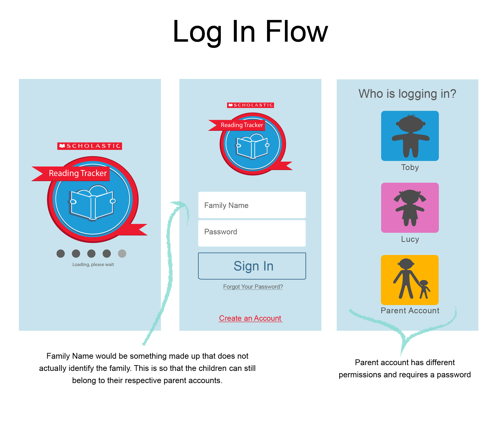 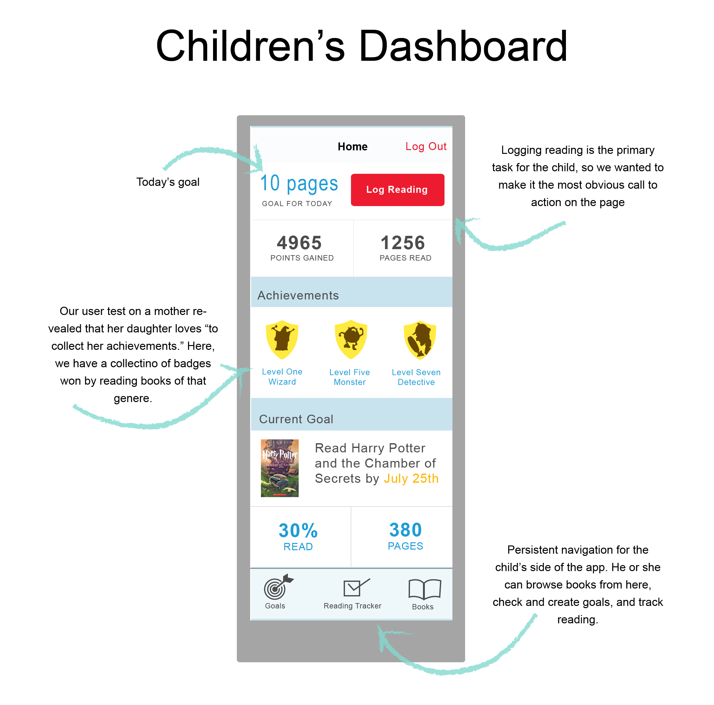 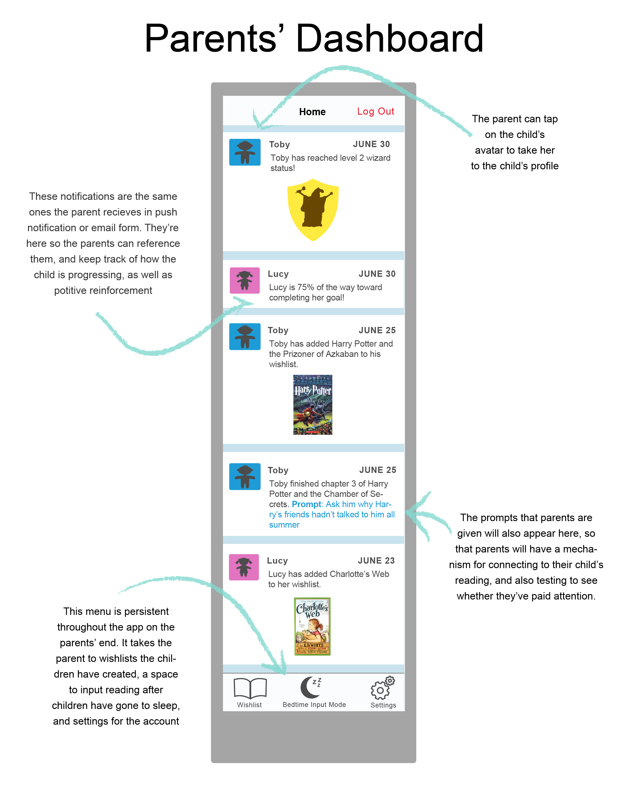 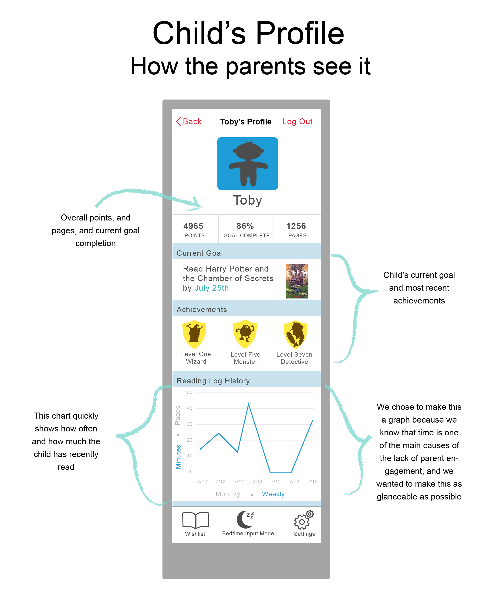